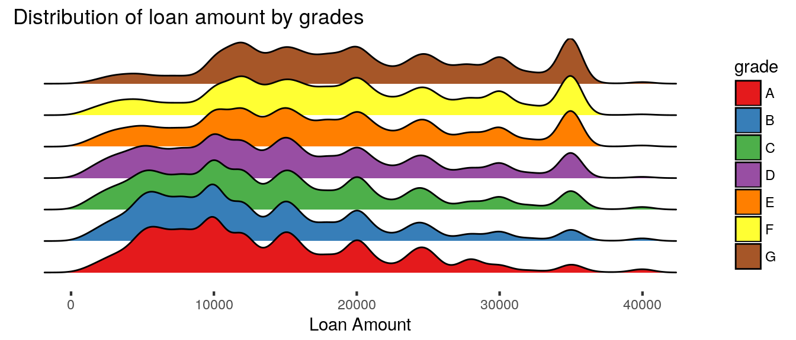
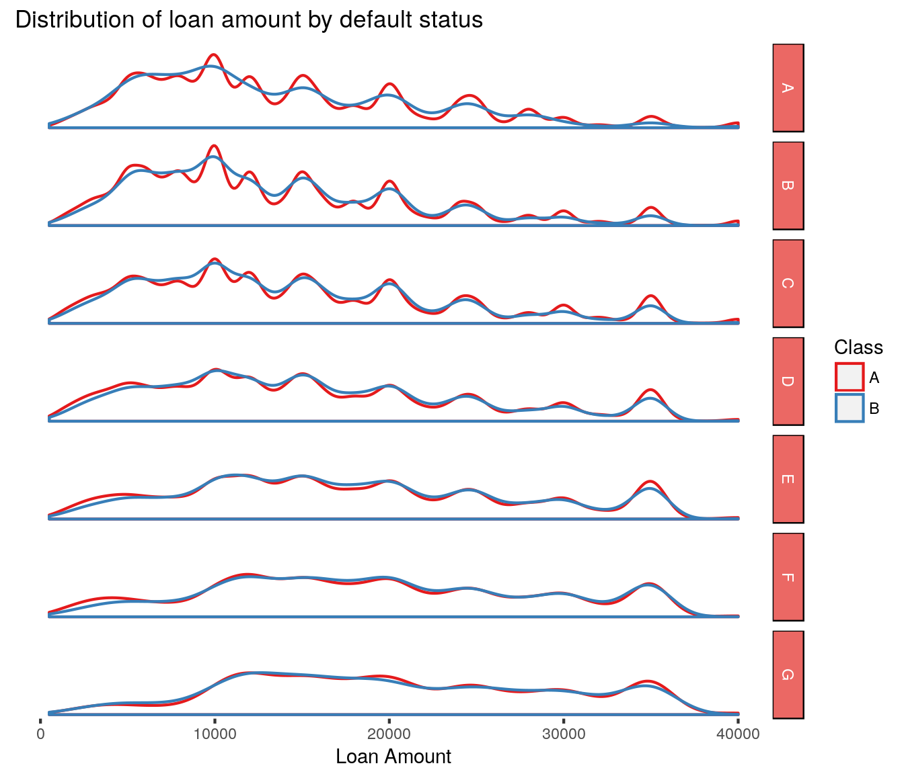
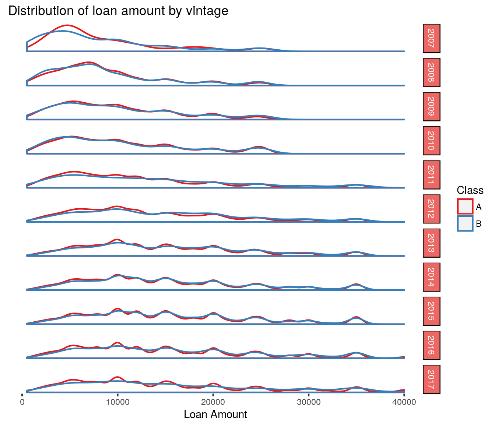

Chapter 2 Loan Amounts
2.1 Analyzing the Loan Amount

QUESTION: Why is there a peak at $24,000 and not at $25,000? Is there a cutoff in the risk scoring model?
Answer: In the past, Lending Club had adjusted the loan grades for the loan amounts. Their model started with a base interest rate and was then adjusted up based on their FICO score. The rates were then further adjusted for the loan amount. Other factors influenced the score such as the number of inquiries and the number of accounts. (Renton 2011) Posit: If this was widely known, then borrowers would apply for less than the breakpoint to avoid the extra interest charges. This is a plausible explanation for why there was more loans at 24,000 than 25,000 if that was one of the cutoffs.

Looking at grades D through G, the distribution of the defaulted and is fairly consitent with the distribution of current loans. On it’s own, this suggests that loan amount won’t have a predictive value over default rates. The exception is there seems to be a slight bump at the $35,000 level which is the maximum Lending Club offers. Loans at the maximum amount default at a disproportionately low rate. There may be an advantage in investing in loans in these grades at the max loan amount.
There isn’t the same hump at the $35,000 level when looking at grade A & B loans. Those loans are more highly concentrated at the lower loan amount. Perhaps LC’s credit rating status punishes the borrower for a higher loan amount.
QUESTION: Why does the $35,000 loan amount have lower proportionate defaults in grades C though E? Is this related to the apparent cutoff noted above? Take a look at $35K loans and the relationship with other variables.

References
Renton, Peter. 2011. “How Lending Club and Prosper Set Interest Rates.” Blog. Lend Academy. http://www.lendacademy.com/how-lending-club-and-prosper-set-interest-rates/.